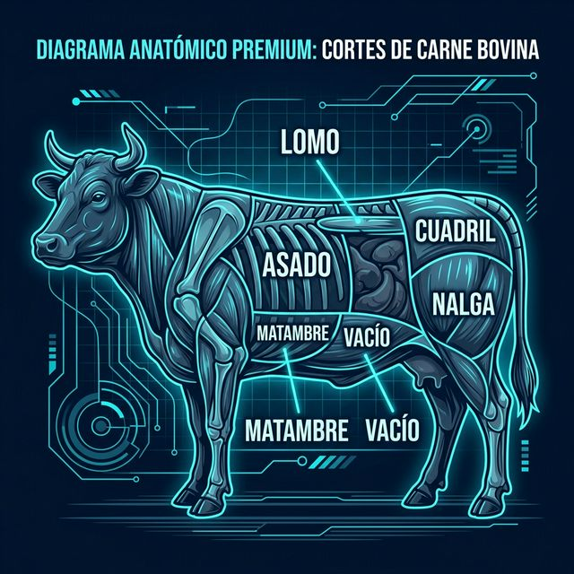

Volver a la Ruta
Cortes Anatómicos de Res
Módulo 2 • Mes 3

Análisis de la Cartografía Cárnica
Comprender la anatomía del bovino es el paso fundamental para optimizar el rendimiento de la media res. Cada sección de la de arriba (Chuck, Ribs, Sirloin, Round) posee un porcentaje distinto de desperdicio óseo y grasa de cobertura.
- Cuarto Trasero (Round/Sirloin): Concentra cortes de primera calidad y valor comercial (Peceto, Nalga, Cuadril). Requiere precisión milimétrica en el desposte.
- Asado y Costillar (Ribs/Plate): Tiempos de cocción prolongados, popularidad extrema en el mercado local. El asador evalúa la calidad del frigorífico por este corte.
- Cuarto Delantero (Chuck): Carnes más fibrosas, ideales para picada, guisados o cocciones lentas.
En el panel interactivo superior, puedes repasar las divisiones anatómicas profesionales. Asimilar esto es obligatorio para tu examen integrador de la próxima semana.